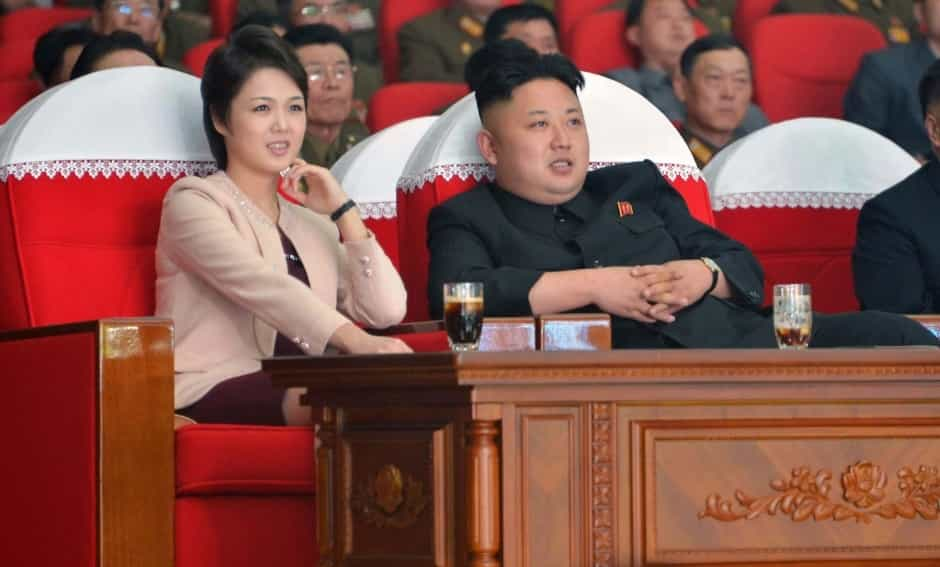

There are some pitfalls in the conventional wisdom of the online manosphere despite providing a more realistic explanation of gender relations than that of the feminist establishment. What I find concerning is their near unanimous endorsement of alpha male behavior while disregarding the possibility that alpha behavior can also lead to a man’s downfall.
I recommend a new classification for men who self-destruct in the pursuit of alpha male status. For lack of a better term, I will be classifying these types of men as “psi males.”
I once heard a story about a wildlife conservation effort that perfectly described the archetype of the psi male. I cannot attest to the validity of this story, but it does serve to illustrate my point.
The conservation effort, which was an attempt to increase the regional gray wolf population, went awry when one of the male wolves took over the entire population. Within a short amount of time he killed off all of the other males and mated with all of the females. He then went on to kill all of his male offspring and mate with his own female offspring.
The loss of so many male wolves diminished the hunting capabilities of the population, resulting in mass starvation. He eventually died off, leaving a path of destruction in his wake. Within a generation, the once vibrant wolf population was reduced to a handful of inbred females with no mating prospects.
Initially, it may seem best to classify this wolf as an alpha male as he had many of the characteristics that are associated with alphas. He was strong, dominant, and most of all, he mated with many females. Despite this, he was missing one of the defining characteristics of alpha males: reproductive success.
It is true that he produced more offspring than the average male could ever hope to produce. But he also killed many of these offspring. Those that he allowed to live were forced to fend for themselves. Best case scenario, he produced a handful of lackluster offspring with severely diminished mating potentials. Worst case scenario, he was an evolutionary dead end who took down the entire wolf population with him.
He would not qualify as a beta male either as his characteristics were the antithesis of those commonly assigned to betas. He certainly would not qualify as an omega male as he actually managed to produce offspring.
Still, from an evolutionary biological perspective, his reproductive success was only one step above that of omegas and far below that of betas. Hence I have decided that it is best to classify him as a psi male, since psi is the second to the last letter of the Greek alphabet, succeeded only by omega.
Granted, this is an extreme example of a psi male and it is unlikely that a single human male could ever hope to kill off all of the males in a population and mate with every female. But that is why this wolf serves as the archetype for the psi male: he is the perfect representation of what a psi male would be like. Despite the improbability of a true human psi male emerging, there are real-world examples of men who have attempted to live up to the gray wolf archetype.

Many cult leaders exhibit psi male behavior. A common theme in cults is that they are led by a charismatic male leader who has primary, if not exclusive, sexual access to the women. Many of the men in cults willingly hand their resources and women over to the cult leader without objection.
Despite the apparent invulnerability of the cult leader, this is a system which has repeatedly proven itself to be unsustainable, as evidenced by the numerous instances where such cults have self-destructed in a violent manner.
An infamous example of a cult failing in this manner is the mass suicide of 909 members of the People’s Temple in 1978 under the direction of their leader Jim Jones. Unsurprisingly, Jones reportedly had a voracious sexual appetite which he routinely unleashed on his members. Much like the gray wolf archetype, any potential children sired through the sexual conquests of his members either perished with the cult or were left to fend for themselves in the real world.

Dictators are another example of men who exhibit psi male behavior, with a relevant example being North Korean leader Kim Jong-un. Granted, it is difficult to say what goes on behind closed doors in a nation as secretive as North Korea, but it is reasonable to suspect that Jong-un’s access to North Korean women is limited only by his own libido, because that is how dictatorships typically work.
Despite his numerous sexual escapades, he may end up leading his people into a nuclear holocaust, potentially eliminating him and all his offspring from the gene pool. It is baffling to think that the supreme and undisputed male leader of 25 million people could wind up as an evolutionary dead end, but that is a testament to the destructive potential of psi male behavior.
The gray wolf archetype, cult leaders, and dictators are extreme examples, so I do not know how common psi males actually are. They may be so rare that the average person does not ever need to worry about encountering them. On the other hand, psi males provide a counterexample to the manosphere’s conventional wisdom that alpha male behavior is always a good thing, so perhaps they are still worth discussing.
Psi males do raise some interesting questions for the manosphere: What is it that separates alpha males from psi males? Are psi males simply alpha males who succeed in fulfilling all of their desires, or are they motivated by different things? If they have the same motivations, should that diminish the honor the manosphere awards to alpha males? Is it possible for a true human psi male to exist? If a population is susceptible to being taken over by a psi male, does that mean they are already on the verge of collapse? If sexual strategy really is amoral, as is sometimes argued in the manosphere, then is it possible to form a moral objection to psi male behavior?
I do not have the answers to these questions, all I know is that there appears to be a contradiction in the conventional wisdom of the manosphere, and that psi males personify this contradiction.
Read More: Game Of Thrones Has Nothing But Beta Males And Alpha Women.